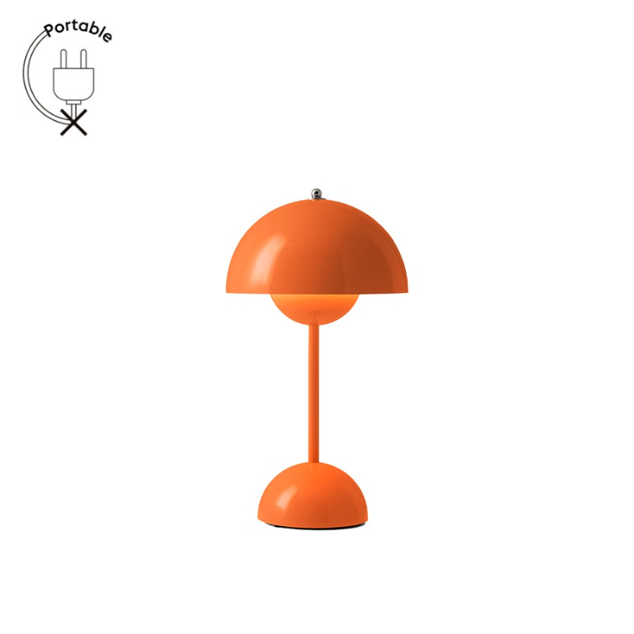

사진 확대 ↗같은 모양을 유지하려면
Flowerpot VP9
Zesty Orange · 충전식 탁상 조명
310,000원기본 배송 무료
VP10의 반구 두 개와 선명한 오렌지색을 그대로 이어가는 선택이에요. 기존 작업용 스탠드는 그대로 두고 무드 조명으로 사용합니다.
- 크기
- 지름16 × 높이29.5cm
- 전원
- USB 충전 후 무선 사용 · 터치 조절
천장에 매다는 제품이 아니고 책상 공간을 차지해요. 충전 어댑터 포함 여부는 별도 확인이 필요합니다.
제품 상세 보기 ↗